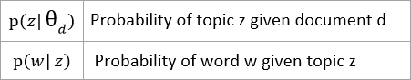
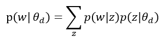

Supsicious Connects Analysis
Spot offers a family of suspicious connections analyses that identify the most suspicious or unlikely network events in the observed network and report these to the user for further investigation to determine if they are indicative of maliciousness or malfunction. The suspicious connects analysis is a form of semi-supervised anomaly detection that uses topic modelling to infer common network behaviors and build a model of behavior for each IP address.
The topic model at the core of Spot-ml is an unsupervised machine learning model. However, Spot allows for user feedback to effect the model’s view of what is suspicious (see ‘Further Notes on Spot-ml’ for more details about the feedback functionality). This section briefly describes the mathematical principles behind the Suspicious Connects Analysis.
Supported Data for Analyses
Currently Spot supports analyses on the following data sources:
- (undirected) Netflow logs
- DNS logs
- HTTP Proxy logs
In this discussion, log entries are referred to as "network events".
Anomaly Detection via Topic Modelling
The suspicious connects analysis infers a probabilistic model for the network behaviors of each IP address. Each network event is assigned an estimated probability (henceforth, the event’s “score”). Those events with the lower scores are flagged as “suspicious” for further analysis.
The probabilistic model is generated via topic modelling. Topic modelling is a technique from natural language processing that analyzes a collection of natural language documents, and infers the topics discussed by the documents. In particular we use a latent Dirichlet allocation (LDA) model. For details outside of the scope of this description, please see the Journal of Machine Learning Research article “Latent Dirichlet Allocation” by David M. Blei, Andrew Y. Ng, and Michael I. Jordan. For comparison purposes, our mathematical notation is similar to that used in the JMLR article.
Below we describe the probability distributions that arise from an LDA model, and describe how anomaly scores can be assigned to words of a document. We then describe how ‘words’ and ‘documents’ are formed from network logs so that a network log entry is provided an anomaly score given by the score of the word to which it is associated.
Latent Dirichlet Allocation
Input: A collection of documents, each viewed as a multiset of words (bag of words). An integer k which is the number of latent topics for the model to learn.
Output: Two families of distributions. For each document, a “document’s topic mix” which gives the probability that a word selected at random from the document belongs to any given topic (that is, the fraction of that document dedicated to any given topic). For each topic, a “topic’s word mix” which gives the probability of any given word conditioned on the topic (that is, the fraction of that topic dedicated to each word).
In mathematical notation:
An assumption is made that a topic’s word mix is independent of the document in question. We can therefore perform a model-estimate of the probability of a word, w, appearing in the document, d, as follows:
Topic Modelling and Network Events
By viewing the logged behavior of an IP address as a document (eg. all DNS queries of a particular client IP) and the constituent log entries as “words” it is straightforward to apply topic modelling to analyze network traffic.
| Text Corpora | Network Logs |
| document | log records of a particular IP adddress |
| word | (simplified) log entry |
| topic | profile of common network behavior |
There is one significant wrinkle: For topic modelling to provide interesting results, there should be significant overlap in the words used by different documents, whereas network log entries contain nearly unique identifiers such as network addresses and timestamps. For this reason, to perform topic modelling on network events, the log entries must be simplified into words.
From Events to Documents: Word Creation
The conversion of network events into words is the point of subtle art in the Spot Suspicious Connects analysis. The procedure for converting events into words must preserve enough information to turn up interesting anomalies during malicious behavior or malfunction, it must create words with enough overlap between documents (IP addresses) that the topic modelling step produces meaningful results, and it should distill information that is particular to the “type” of traffic rather than a specific machine (to justify the simplifying assumption made to estimate word probabilities).
Netflow
A netflow record is simplified into two separate words, one to be inserted in the document associated to the source IP and another (possibly different word) inserted into the document associated to the destination IP. The words are created as follows:
| Feature (string 'letter in the word') |
|
Flow Direction: If both ports (between source and destination) are 0, then this feature is missing from the words that go into both the source and destination IP documents. If exactly one port is 0, this feature is missing for the IP document associated to the 0 port, and this feature is given as “-1” for the IP document associated to the non-zero port. If neither port is zero, and either both or neither of the listed ports are strictly less than 1025, this feature is missing for both source IP and destination IP words. If neither port is zero and only one of the ports is strictly less than 1025, this feature is given as “-1” for the IP document associated with port that is less than 1025 and is missing for the IP document associated to the other (high) port. |
|
Key Port: If exactly one of the ports is non-zero this feature is given as the non-zero port number for both source and destination IP documents. If exactly one port is less than 1025 and this port is not zero, this feature is given as this port number for both the source and destination IP documents. If both ports are non-zero and strictly less than 1025 this feature is given as “111111” for both the source and destination IP documents. If both ports are greater than or equal to 1025 this feature is given as “333333” for both the source and destination IP documents. |
|
Protocol |
|
Time of day |
|
Total Bytes |
|
Number of Packets |
Examples:
(1) A record with source port 1066, destination port 301, protocol given as TCP, time of day with hour equal to 3, bytes transferred equal to 1026, with 10 packets sent.
The word “301_TCP_3_12_5” is created for the source IP document.
The word: “-1_301_TCP_3_12_5” is created for the destination IP document .
(2) A record with source port 1194, destination port 1109, protocol given as UDP, time of day with hour equal to 7, bytes transferred equal to 1026, and 1 packet sent.
The word: “333333_UDP_7_12_1” is created for both the source and destination IP documents
DNS
A DNS log entry is simplified into a word and inserted into the document associated to the client IP making the DNS query. The word is created as follows:
Feature(string ‘letter in the word’) |
Analyze DNS query name: |
Frame length |
|
Time of day |
Subdomain Length |
|
String Entropy of Subdomain |
|
Number of periods in Subdomain |
|
DNS query type |
|
DNS query response code |
Proxy
A proxy log entry is simplified into a word and inserted into the document associated to the client IP making the proxy request. The word is created as follows:
|
Feature(string ‘letter in the word’) |
|
Analyze DNS query name: |
|
Time of day |
|
Request Method |
|
String Entropy of URI
Use the string for the bin number (0-18) into which the entropy value falls, using bins defined by the following cutoff values: (0.0, 0.3, 0.6, 0.9, 1.2, 1.5, 1.8, 2.1, 2.4, 2.7, 3.0, 3.3, 3.6, 3.9, 4.2, 4.5, 4.8, 5.1, 5.4, 20) |
|
Top level content type |
Frequency of user agent type in training data |
|
Response code |
Further Notes on Spot-ml
-
Notes on the binning for word creation
The bin number associated to a given value is assigned as the index of the first entry in the array of cut off values for which the value is less than or equal to that entry. For example the values that will fall into bin number 0 are defined by the inequality: value <= cut_off_array(0) and the values that lie in bin number 1 are defined by the inequality: cut_off_array(0) < value <= cut_off_array(1).
-
LDA Implementation
We currently use a Spark-MLlib implementation of latent Dirichlet allocation.
-
User Feedback
If the user determines that certain feature values of a connection are acceptable and have been wrongly classified, Spot allows the user to provide feedback in order that a new model can be generated that will no longer flag similar events as suspicious.
In the UI, the user can designate a selection of features out of: source ip, destination ip, source port, and destination port; to be given a user-severity score of ‘3’ (meaning low priority). This action causes low priority designations to be associated to all of the log entries (from within the collection of the most suspicious entries that were returned from Spot-ml) that have feature values matching the features selected. These log entries are then stored into a csv file. Log entries from this file are then injected (each entry is inserted the number of times determined by the value of DUPFACTOR set in spot.conf) into the next batch of data for Spot-ml. As a result, log entries simplifying to certain words (matching the words the feedback logs simplify to) will subsequently be seen as normal due to the large volume of such words now present in the data.